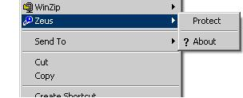
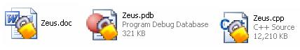
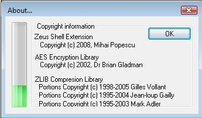

Utilizare Zeus

Criptarea si decriptarea se realizeaza printr-un meniu contextual (click dreapta pe un fisier),
prin intermediul a doua comenzi: “Protect” si “Unprotect”. Comanda “Protect” apare in meniu numai la fisierele care nu sunt deja criptate si comprimate,
iar comanda “Unprotect” apare numai la fisierele care sunt criptate si comprimate.
Fereastra principala
Fereastra principala este impartita in 4 mari grupe functionale:
- Compresie
Este asigurata de ZIP cu 6 niveluri de compresie:
- Store
- Fastest
- Fast
- Normal
- Maximum
- Ultra
- Encriptie
Este asigurata de AES in 3 moduri:
- AES 128 bits
- AES 256 bits
- Aleator 128/256 pentru fiecare fisier
- Optiuni
- Create Backup
Creeaza fisiere de recuperare.
- Append Existing
Adauga la fisierele existente/sau la arhiva la protejare daca acestea/aceasta deja exista.
- Overwrite Existing
Sterge fisierele existente pentru a putea creea pe cele noi.
- Remove original
Sterge fisierele care se protejeaza sau arhiva care se deprotejeaza.
- Progres
Este formata din doua bari de progres. Prima este pentru a afisa progresul pentru fisierul curent iar a doua progresul general.
Fisierele protejate
Un fisier este recunoscut ca fiind protejat daca el este un fisier ZIP ce contine fisiere criptate cu AES si comprimate (prin orice metoda admisa
de formatul ZIP, in principiu Store sau Deflate). Fisierele recunoscute astfel sunt afisate in Explorer cu o iconita suprapusa in mod overlay peste
iconita standard (un lacat ce apare in coltul din dreapta jos al iconitei originale) pentru ca fisierul protejat poate avea orice extensie.
Odata ce un fisier/director a fost criptat si comprimat cu Zeus, recunoasterea lui pentru aplicarea iconitei specifice se face doar prin
citirea continutului si identificarea sa ca fisier ZIP criptat cu Zeus.

Fereastra About

Aceasta fereastra se deschide tot din meniul contextual aplicat pe fisiere si afiseaza informatii generice despre ratia de compresie la care a fost
protejat fisierul si informatii despre copyright. Ratia de compresie este definita ca raport intre dimensiune fisierului compresat si dimensiunea lui
inainte de compresie. ZIP este metoda care niciodata nu are o ratie de compresie supraunitara adica niciodata nu expandeaza datele ca in cazul LZW la
care ratia poate depasii 200% sau chiar 300%.
Sumar
Proiectul Zeus este un utilitar gratuit, scopul lui fiind sa satisfaca nevoia de securitate si compresie a datelor utilizatorului final.
Inovatia la Zeus consta in a proteja fisierele intr-un mod neomogen folosind o metoda de encriptie de putere aleatoare.
S-au folosit librariile gratuite si standardizate pentru compresie si encriptie pentru a oferi o alternativa free la WinZip.
Interfata este prietenoasa cu utilizatorul, programul integrandu-se in Windows Explorer.